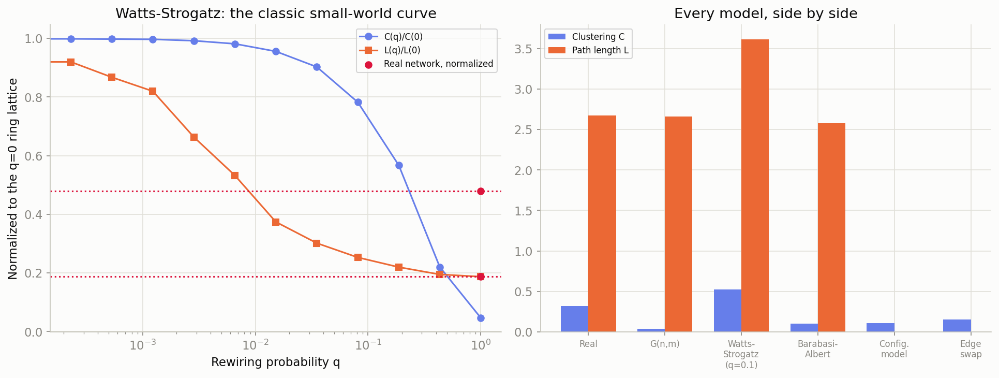
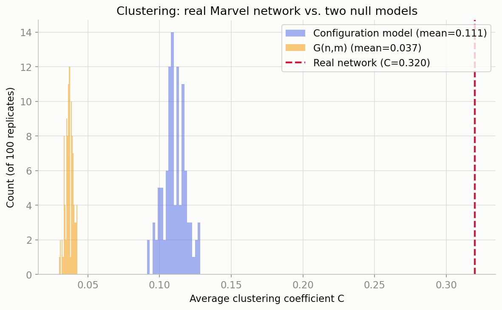
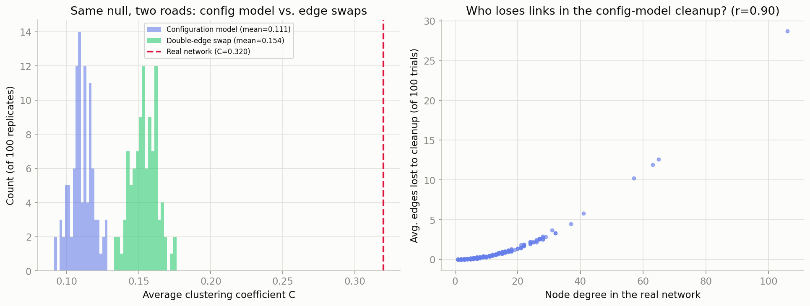
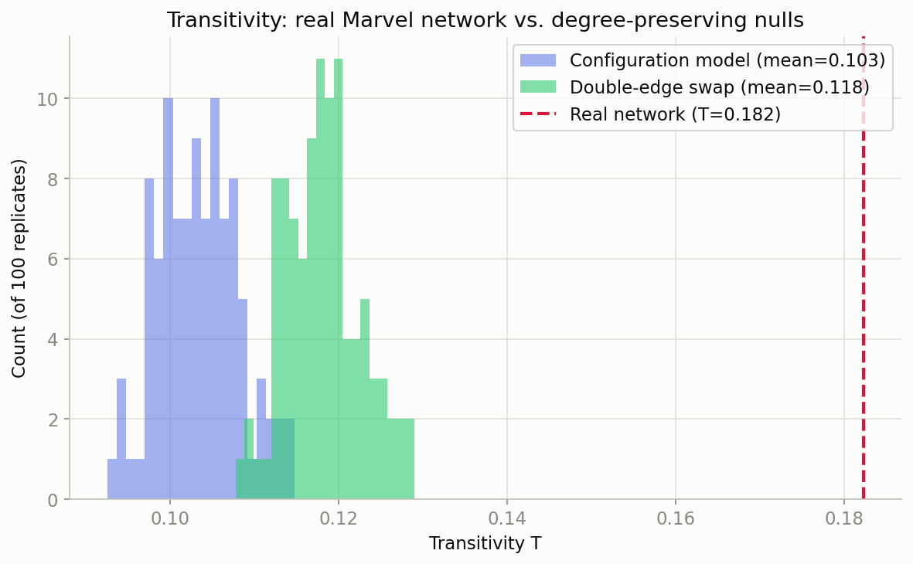
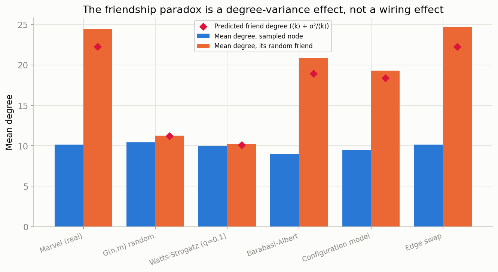
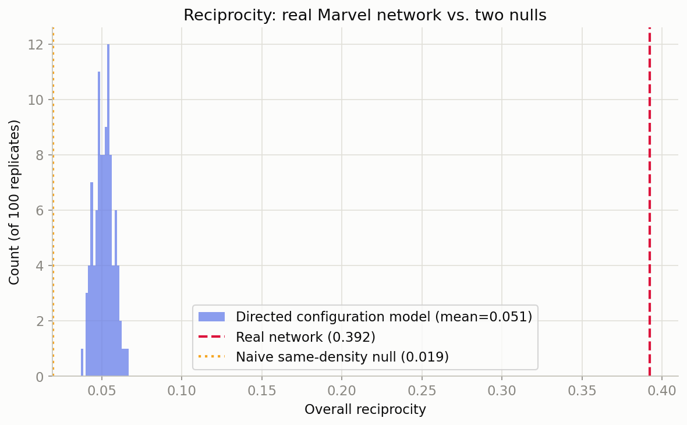

Which Generative Model Looks Like Marvel?
Same giant component throughout (277 nodes, 1,421 links, ⟨k⟩ ≈ 10.26). Five models, matched on n and (as closely as each model allows) on m or ⟨k⟩: $G(n,m)$ random, Watts–Strogatz small-world, Barabási–Albert preferential attachment, and two nulls that start from Marvel's exact degree sequence — the configuration model and degree-preserving edge swaps.
Every model, side by side
| Model | C | T | L |
|---|---|---|---|
| Real Marvel | 0.320 | 0.182 | 2.674 |
| G(n,m) random | 0.037 | 0.037 | 2.662 |
| Watts–Strogatz (q=0.1) | 0.522 | — | 3.618 |
| Barabási–Albert | 0.099 | 0.077 | 2.579 |
| Configuration model | 0.111 | 0.103 | — |
| Edge swap | 0.154 | 0.118 | — |
| Model | max degree |
|---|---|
| Real Marvel | 106 |
| G(n,m) random | ~24 |
| Watts–Strogatz | ~16 |
| Barabási–Albert (m=5) | ~64 |
| Config. model / edge swap | 106 (exact) |

Configuration Model vs. Edge Swap: the Honest Null
Two ways to build the same intended null — a uniformly random graph with Marvel's exact degree sequence, nothing else fixed. 100 replicates each. They should agree. They don't, quite — and the gap is itself informative.
100 configuration-model replicates vs. 100 G(n,m) replicates
Configuration-model replicates built from the exact real degree sequence
(nx.configuration_model), with self-loops and parallel edges
dropped afterwards — costing 103.5 links per trial on average (7.3%).
G(n,m) replicates for comparison, matching only n and m.

G(n,m) null is the more naive comparison and
produces the more dramatic-looking gap (z ≈ 103, mean
C = 0.037); the degree-preserving configuration model is the fairer
one and still leaves the real value roughly 3× higher, at
z ≈ 27 (mean C = 0.111). Both empirical p-values sit
at the floor set by only 100 replicates (1/101 ≈ 0.0099) — the
real value never once fell inside either null distribution.
Same null, two roads: why 0.11 vs. 0.15?
Start from the real network instead, and randomize it in place with
degree-preserving edge swaps (nx.double_edge_swap, 10× the
link count as the swap budget). No self-loops or parallel edges are ever
created — the degree sequence is exactly preserved by construction, verified
across all 100 trials.

| config-model mean C | 0.111 |
| edge-swap mean C | 0.154 |
| real C | 0.320 |
| edge-swap z-score | 18.7 |
| Character | degree | lost/trial |
|---|---|---|
| Spider-Man | 106 | 28.7 |
| Hulk | 65 | 12.6 |
| Wolverine | 63 | 11.9 |
| Doctor Strange | 57 | 10.2 |
| Deadpool | 41 | 5.8 |
Transitivity and isolated nodes under both nulls

Transitivity is extreme under every null tried (z ≈ 17 against the configuration model, z ≈ 15 against edge swaps) — even more so than the average clustering coefficient, because it weights every triangle equally instead of averaging per-node ratios, so it's pulled hardest by exactly the hub-heavy triangles that degree alone can't manufacture.
Stub Pairing: an Interactive Explorable
Why does cleaning up a configuration model's self-loops and parallel edges cost hubs so much more than everyone else? Pick a degree sequence, shuffle its stubs, and watch. Every self-loop (red) and parallel edge (orange, dashed) removed after pairing is a piece of degree quietly stripped from whichever two nodes happened to be on the losing end — and the busier a node's stub list, the more chances it gets to lose.
Testing the Friendship Paradox Across Every Model
Your friends have more friends than you do — on average — whenever the people you sample as "friends" are picked by following an edge, which oversamples high-degree nodes in proportion to their degree. The predicted gap is ⟨kfriend⟩ ≈ ⟨k⟩ + σ²/⟨k⟩: the paradox is driven entirely by the variance of the degree distribution, not by any particular wiring pattern. 1,000 (node, random-neighbor) pairs sampled from each of the six networks above.

| G(n,m) random | 1.08× |
| Watts–Strogatz (q=0.1) | 1.01× |
| Real Marvel | 2.41× |
| Edge swap | 2.43× |
| Configuration model | 2.03× |
| Barabási–Albert | 2.31× |
Testing a Reciprocity Claim
The open-ended weekly write-up. A common flawed analysis claims "39% reciprocated vs. 3% by chance, so reciprocity is 13× higher" — without ever running the numbers under the right null. This does.
Does the reciprocity effect survive a degree-preserving null?
The Marvel network's directed graph (303 nodes, 1,784 edges) has 39.2% overall reciprocity. The naive same-density null used in the flawed claim predicts just 1.9% — a 20× gap, in the same spirit as the "13×" framing. But that null treats every node as equally likely to link anywhere, which Marvel's hub-heavy degree sequence makes a poor assumption.

| predicted reciprocity | 1.9% |
| real / null ratio | 20.1× |
| mean reciprocity | 5.1% |
| z-score | 57.2 |
| empirical p-value | 0.0099 |
| real / null ratio | 7.6× |
Other directions considered
This section is intentionally open-ended; the reciprocity closer above was chosen because it directly tests a common flawed claim with the right null. Other suggested directions worth a follow-up:
- Proper CCDF + MLE power-law fitting for the in-degree distribution
(flagged as "confidence: low, eyeball call" back in the
degree-distribution write-up)
— a natural next step using the
powerlawpackage, now that the model comparison above shows Barabási–Albert gets the shape roughly right but not the scale. - Which specific characters drive Marvel's friendship paradox, and does anyone actually beat their own neighbors' average degree? (The comparison above shows that the paradox is strong here — not who is responsible.)
- Community/team structure directly: the configuration model and edge swap both fall short of the real clustering by a factor of ~3, which points to more than just degree heterogeneity — actual team/arc structure is the likely remainder, and hasn't been tested directly yet.